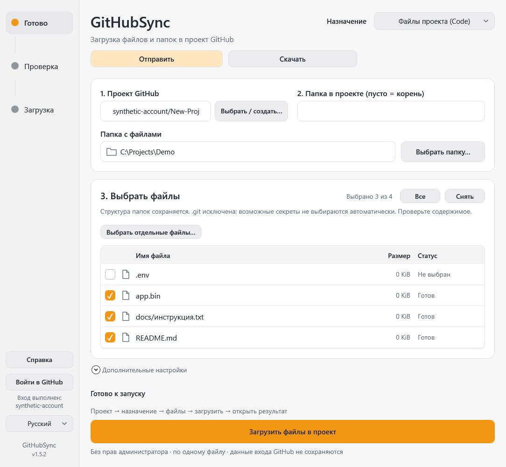

Windows 10/11 · x64
GitHubSync
Отправляет файлы в GitHub и скачивает исходники или файлы выпусков после подтверждения пользователя.
Выпуск · 1.5.3Перед запускомWindows PowerShell 5.1 и .NET Framework 4.6.2+ с WPF; Git/GCM входят в portable. EXE без цифровой подписи. Для отправки нужны интернет и права записи в проект.


Как это работает
- Выбрать репозиторий
- Проверить файлы
- Загрузить в Code или Releases
Первые шаги
Проверьте SHA-256, распакуйте весь portable-пакет и откройте GitHubSync.exe. Выберите отправку или скачивание, проект, назначение и файлы; подтвердите действие.